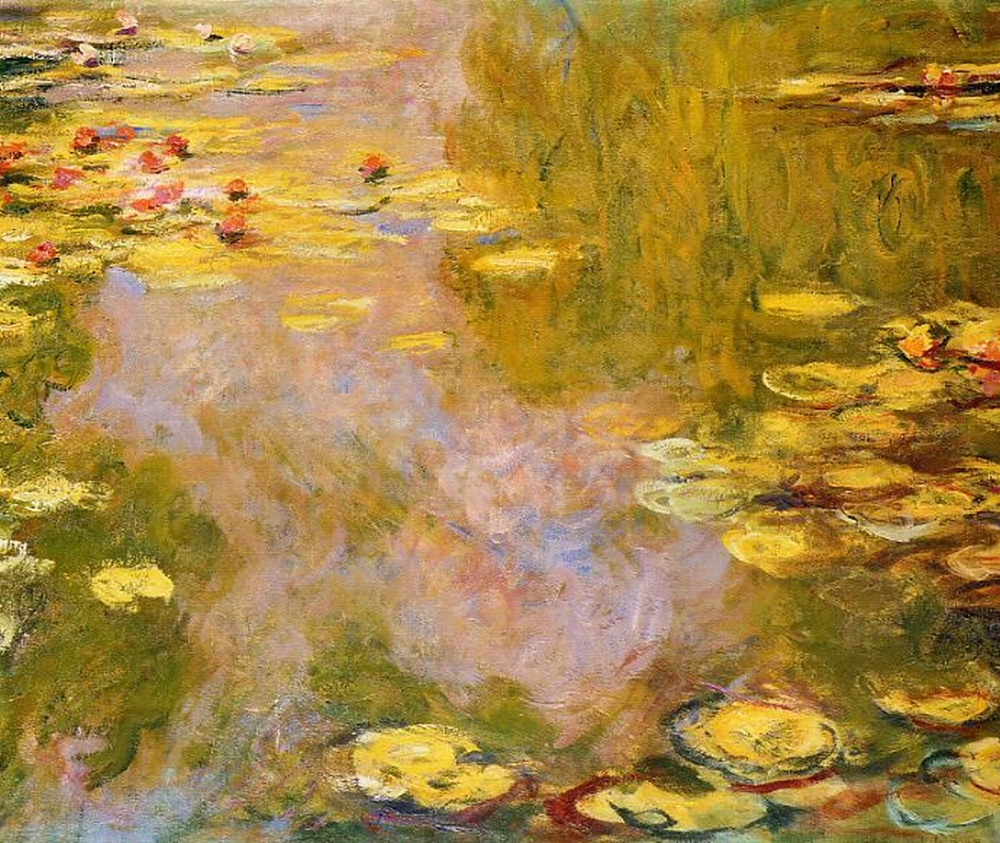
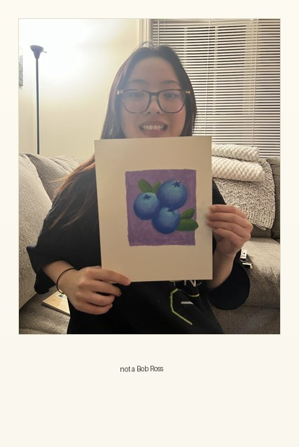
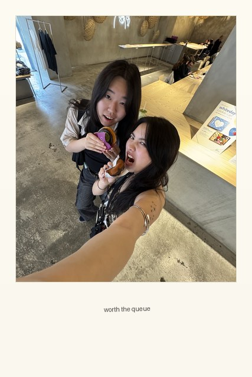
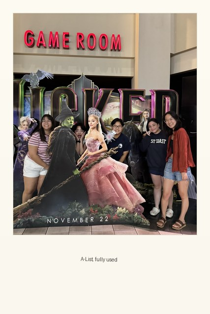
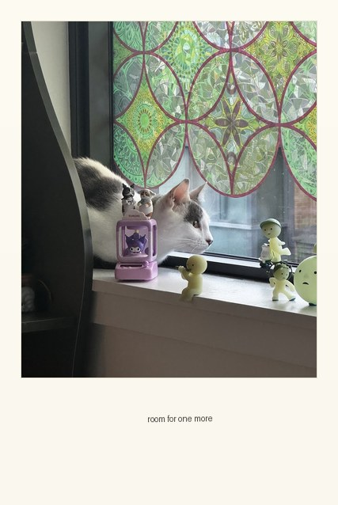
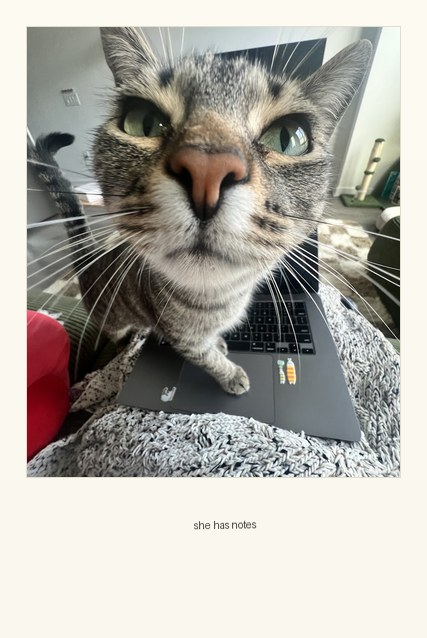

hover to bring
to life
I’m Kiara. /kee-ar-uh/
Welcome to the corner of the internet I actually maintain.
I’m an engineer who kept ending up in the design conversation and eventually stopped treating that as an accident. I like the layer underneath the product: the design system, the internal platform, the tool everyone reaches for without thinking about it. I write the code and I draw the thing, which usually makes me the one asking whether the component should exist at all.
Software Engineer at Capital One
Built and shipped a React and TypeScript resource-inventory platform from scratch, owning research, design and rollout. Shipped the compliance event timeline and the GraphQL endpoint behind it, and led a 12,600-line design system overhaul unifying more than a dozen pages.
2024 –
Software Engineer Intern at Capital One
Stood up an EC2-based cloud-native deployment, and built a Spark pipeline on AWS Lambda that spins up ephemeral EMR clusters to aggregate into S3.
2023
UI/UX Intern at Colgate-Palmolive
Led full-stack development of internal apps for the compensation, learning and people-acquisition teams, replacing manual workflows. Built a dashboard builder for executives and HR partners on top of hardware telemetry.
2022
Software Engineer Intern at BlackLine
Built a C# API integration between the finance-automation and compliance systems so every active control could be seen in one place. Owned features end to end: design, build, test and rollout.
2022
B.Sc. Computer Science at Brown University
Computer science, 4.0.
2020 – 2024
Study Abroad at Yonsei University
A semester in Seoul.
2023
I also moonlight as: a bad painter, a food enthusiast, a NYT games semi-solver, a Stardew capitalist, an AMC A-Lister, a reformed K-Pop superfan, a collector of smiskis, a worldbuilder, a retired yearbook editor, a Catan loser, and a full-time cat person.
hover over a link




